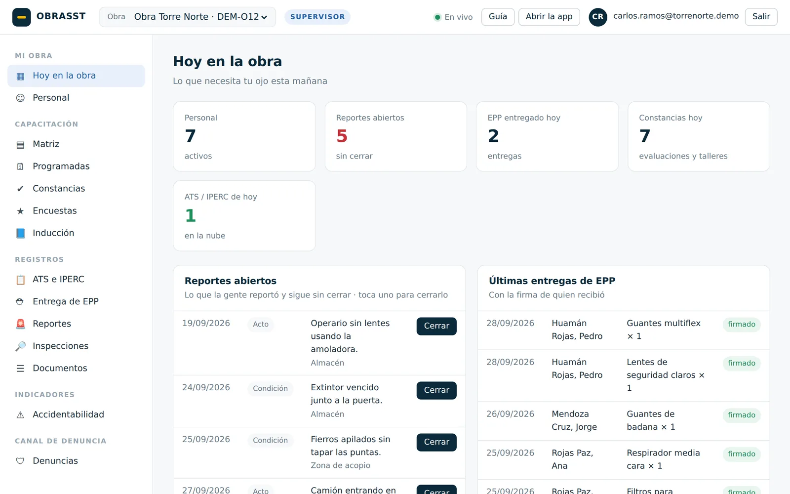
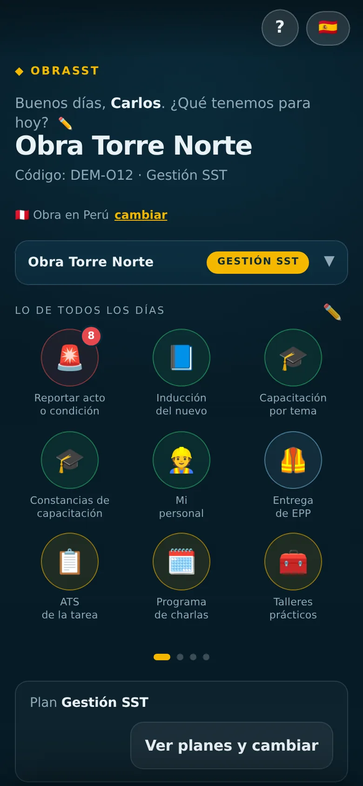

ATS e IPERC con firmas
La cuadrilla firma con el dedo y el V°B° del SSOMA libera el trabajo. Sin hojas mojadas ni firmas que faltan.
Abriendo tu portal…
Seguridad y salud en obra · app y portal web
ATS con firmas, capacitaciones con evaluación, entrega de EPP, reportes con foto e inducción. Se registra en la obra con el celular, aunque no haya señal, y se ve aquí al instante.
La misma cuenta de la app. Lo que registres en el celular aparece aquí al instante.
Con tu correo y una contraseña. Es una sola cuenta: sirve aquí y en la app.
Abrir la app ¿Dudas? Preguntas frecuentes
Al entrar aceptas los Términos y condiciones y la Política de datos.
Principales funciones
Lo que hoy se llena en papel, se firma a la carrera y se pierde en una carpeta, queda en el celular con su firma y su fecha. Y sale en PDF o en Excel cuando lo piden.
La cuadrilla firma con el dedo y el V°B° del SSOMA libera el trabajo. Sin hojas mojadas ni firmas que faltan.
El trabajador la rinde en su celular, contesta la encuesta y firma. La constancia de cada uno y el registro de todos salen en PDF.
Listas para dictar al inicio de la jornada, con el programa del mes y la asistencia por QR.
El kardex con la firma de quien recibió. El registro del mes, en Excel y en PDF, sin pasarlo a mano.
El sticker lleva el nombre, el cargo, el grupo sanguíneo y los números de emergencia de la obra. El QR abre lo que el trabajador autorizó mostrar.
Su ficha con sus datos y sus registros. La inducción la hace desde su celular, difusión por difusión, con su firma en cada una.
La hoja de seguridad (MSDS), los pictogramas del SGA con su nombre y el rombo NFPA explicado, en una hoja con QR para pegar en el almacén.
Actos y condiciones desde la obra, con nombre o anónimos. Se cierran con la foto de cómo quedó.
Los formatos de inspección con lo encontrado, y los índices de accidentabilidad del año con las horas hombre reales.
El reglamento, los procedimientos y los demás documentos de la obra en sus carpetas. El cartel con QR abre siempre el vigente.
El trabajador escribe desde su celular lo que mejoraría. Y la denuncia, si quiere sin nombre, la leen solo las personas que la empresa designa.
Cada equipo con su QR, la inspección del mes y la cinta del color que toca.
Cómo funciona
Es una sola plataforma con dos pantallas: la app, para el celular del que está en campo, y este portal web, para la computadora de la oficina. La misma cuenta entra a las dos.


Planes
Al crear tu empresa tienes 30 días del plan SSOMA completo, sin tarjeta. Al terminar, la cuenta vuelve sola a LITE, que es gratis, y tus documentos no se borran.
Preguntas frecuentes
Prueba con otra palabra, o escríbenos y te respondemos: descarganomaspe@gmail.com
Sin cookies de publicidad ni de seguimiento. Este sitio guarda en tu navegador solo lo que necesita para funcionar: tu sesión y tus preferencias.